 주성치 뺨친 '루저' 대세남 (1) SNL작가 유병재
한국일보닷컴은 흔히 말하는 톱스타는 아니지만 페이스북이나 트위터, 유튜브 등 SNS 세상에서는 톱스타 이상의 인기를 누리는 친근한 매력의 ‘소셜 스타’를 인터뷰하는 ‘눈(SNS)사람’ 시리즈를 시작합니다. – 편집자주 –
“꺅~! 유병재다. 저 병재씨 진짜 좋아하는데 같이 사진 찍어도 될까요?”
인터뷰 중 한 여성 팬이 다가와 환호성을 지른다. tvN ‘SNL 코리아 - 극한직업’에서 스타들의 매니저로 등장해 코믹 연기를 선보이는 유병재(26ㆍ서강대 신문방송)씨는 요즘 예능계의 블루칩이다. “야근해서 꿀꿀했었는데 기분 완전 좋아졌다”며 기뻐하는 팬의 반응을 통해 그의 인기를 피부로 느낄 수 있었다.
코믹 연기도 곧잘 하지만 그는 사실 코미디언이 아니라 작가다. (혹자는 원래 직업이 매니저인 줄 알고 있는 경우도 있다) 인기 비결 역시 연기가 아닌 대본에 있다. ‘극한직업’ 속 ‘매니저 유병재’는 우쭐대고 까다롭고 괴팍한 스타들의 비위를 맞추면서도 다양한 방법으로 연신 깐족댄다. 그 결과는 자못 처참하지만, 그의 망가지는 모습과 예상을 뒤엎는 반전 앞에서 웃음을 참아내기란 쉽지 않다. 백문이 불여일견이라. 그의 대표작을 감상해보면 이해가 훨씬 수월하다.
아직 대중적인 인지도가 높진 않지만 유병재는 SNS에서는 이미 인기스타다. 페이스북 팔로워는 8만명에 육박하고 무심한 듯 올린 사진 한 장, 말 한마디에 많게는 수만 개의 ‘좋아요’가 따라붙는다. “어릴 때부터 남들 웃기는 게 유일한 낙”이라며, ‘최고로 웃긴 놈’이라고 인정받고 싶은 야망을 품었던 소년이 이제 서서히 진가를 드러내고 있다.
웃기는 데 미친 남자, 그리고 인생을 즐길 줄 아는 남자 유병재를 상암동 CJ E&M 사옥에서 만났다.
#1 즐거운 퇴근길
Q ‾ 포털 검색어 순위에 이름이 오르내리고 CF도 찍고 드라마 출연까지 했다. 인기 실감하나? A ‾ “지금껏 살면서 지금처럼 인기 있었던 적이 없다. 예전에 잠깐 방송에 출연할 때(유병재는 2012년 Mnet ‘유세윤의 아트비디오’로 방송에 데뷔했다)랑은 차원이 다르다. 보통은 내 또래의 젊은 분들이 많이 알아봐 주시는데, 얼마 전에 40대 후반으로 보이는 택시 기사님이 알아봐 주셔서 반가웠다. 근데 이름을 모르셔서 알려드렸더니 ‘유병준씨 나오는 건 꼭 챙겨본다’며‘수염은 이렇게 길러보라’고 조언도 해 주시더라. 내 이름은 유병잰데.”
Q ‾ CF까지 찍었으면 수입도 짭짤하겠다. A ‾ “돈은 많지도 적지도 않게 번다. 취미도 딱히 없고, 연애도 안 하고, 친구도 없어서 돈 쓸 일이 별로 없다. 가끔 술 마시는 것 밖에. 이번에 게임 CF 찍었는데, 전에도 10만원쯤 받고 한두 번쯤 찍은 적은 있다. 기타 수입이라면 데뷔작인 ‘니 여자친구’ 저작료가 있는데, 너무 적어서 몇 달치 모아서 한번에 들어오더라. 매달 2,000~3,000원 꼴, 많게는 7,000원까지 받아봤다.”
#2 반전 매력의 차도남
Q ‾ 인간 유병재는 어떤 사람인가. A ‾ “성격이 우울하고 음습한 편이라 감정 동요가 크지 않다. 크게 기뻐하거나 슬퍼하지 않는다. 그래서 남을 웃기는 건 좋아하지만, 난 잘 웃지 않는다. 생각해보니 고1 때부터 잘 웃지 않았던 것 같다. 나는 어릴 때부터 늘 웃기는 걸로는 1등 이었다. 그런데 고등학교에 올라가니 옆 반에 좀 재미있는 애가 있었다. 그 때 처음으로 약간 견제를 했다. 걔가 웃길 때 내가 웃으면 지는 것 같아 일부러 안 웃다 보니 이렇게 된 것 같다.”
Q ‾ ‘극한직업’을 보면 상식을 뒤엎는 반전에서 웃음을 이끌어 내는 경우가 많다. A ‾ “어렸을 때 최양락 아저씨가 ‘유머1번지 - 괜찮아유’란 코너에서 상대방을 살살 약 올리다가 한 대 얻어 맞고선 멀뚱멀뚱 거리는 게 너무 재미있었다. 과장된 리액션으로 웃음을 짜내는 것보다 침묵이나 여백을 통해 저절로 웃음이 터져나오는 걸 좋아한다. 김구라 식의 대놓고 독설하기, 하기 싫은 티를 팍팍 내며 웃기는 것도 좋아한다. 제일 좋아하는 개그 코드는 주성치 형님의 루저 감성과 반전 개그.”
#3 뜻밖의 행운
Q ‾ 데뷔는 어떻게 했나. A ‾ “코미디언을 준비하면서 만들었던 ‘니 여자친구’ 뮤직비디오가 PD 눈에 들었던 것 같다. 사실 ‘나 좀 데려가라’는 생각으로 UCC를 올렸으니 노력의 결과일 수도 있지만, 운이 좋았다. 지금도 그 PD분을 양아버지라 부르고 연락도 종종 한다.
Q ‾ 개그맨 시험에 떨어졌다던데? A ‾ “사실 장래 희망이랄 게 없었다. 서강대에 들어온 것도 대단한 목표가 있었던 게 아니라, 당시에 짝사랑하던 여자애가 있었는데 ‘내가 서울대 가면 날 좋아하지 않을까’하는 지극히 혼자만의 생각에 이끌려 공부를 한 덕택이다. 개그맨 준비를 한 건 군대를 다녀와서다. 군대에서 코드가 맞는 사람들을 많이 만났고 ‘인복이 조금은 있구나’라는 생각이 들었다. 지금 같이 사는 형이 그 군대 선임인데, 지금의 내가 있기까지 많은 도움이 됐다.”
#4 강자에게 약한,
그리고 약자에게도 약한
Q ‾ ‘극한직업’에서 스타에게는 물론 여고생 사생팬, 악플다는 꼬마에게까지 굴욕을 당한다. A ‾ “나의 루저 감성과 자학 코드가 버무려진 캐릭터가 ‘극한직업’ 속 매니저 유병재다. 최근 몇 년간 일을 하면서 심각하게 고민한 게 웃음을 주는 방식이다. 특정인을 대놓고 못생겼다고 얘기하고 놀림감으로 만들면 쉽게 웃길 수 있다. 남을 비하하는 게 아예 잘못됐다고 생각하지는 않지만 누군가를 희생양 삼아 그 대가로 쉽게 웃기는 건 반칙 같다.”
Q ‾ 대부분 에피소드에 뺨을 맞는 장면이 있다. 요샌 거꾸로 때리기도 하더라. A ‾ “처음엔 맞는 게 웃기기 쉬우니까 맞기 시작했다. 그런데 하도 맞았더니 지루해져서 변화를 줄 생각으로 때리는 컨셉을 넣었다. 처음 때린 건 문희준씨였다. 처음엔 미안해서 잘 안 됐는데, 때리다 보니 맛있게 잘 때리는 것 같다. 맞아봐서 느낌을 아니까 그런 것 같다.”
Q ‾ 실제로 맞으면 어떻게 할 건가. A ‾ “겁이 되게 많아서 맞아도 그냥 가만히 있을 것 같다. 거의 100%다. 상대방이 중학생이어도 결과는 마찬가지 일거다.”
#5 눈물
Q ‾ 지금까지 가장 후회되는 경험은? A ‾ “짝사랑하던 애한테 고백을 했었는데 차였다. 그렇게 될 줄 알았으면 아예 고백을 안 하는 건데. 쪽 팔릴 일도 없었을 테고.”
Q ‾ 차여봐야 배우는 게 있지 않나. 각오도 다질 수 있고. A ‾ “실패는 성공의 어머니라고 하지만, 내 연애 인생에서 실패는 그냥 실패였다. 배운 게 없다.”
Q ‾ 이것만큼은 절대 되지 말아야지, 다짐하는 게 있나. A ‾ “꼰대다. 나 스스로 정의하는 꼰대는 ‘니가 감히?’로 정의되는 편견 덩어리다. 정말 되기 싫은데 요즘 점점 꼰대가 돼 가는 것 같아서 신경이 쓰인다. 물론 군대엔 그런 꼰대들이 무수히 많지만 겁이 많아서 잘 적응했다.” (유병재는 지난해 12월 29일 자신의 페이스북에 “티끌만한 힘에도 권위는 자란다. 팔로워가 많으면 가르치려 드는 것 같다. 누가 누굴… 조심하겠다.”라고 썼다)
#6 위안
Q ‾ 대학생활에 잘 적응을 못했다고 들었다. A ‾ “조직에 잘 못 섞인다. 성격 탓인지 친구도 잘 못 사귀고 겉돌았다. 그렇다고 공부를 잘 하는 것도 아니다. 아직 나보다 학점이 낮은 사람을 못 봤다. 열심히 해도 2점대, 최근 일과 학업을 병행하니 1점대 학점이다. 지난 학기는 기분 나빠질까봐 아예 확인을 안 했다. 교수님께 죄송하다.”
Q ‾ 힘들고 지칠 때 어디서 위안을 얻나. A ‾ “역시 남을 웃길 때다. 나는 인정 욕구가 많다. 내가 웃겼을 때 누가 웃었다는 건 날 인정한다는 얘기다. 누군가 웃겼을 때를 곱씹으며 ‘다음엔 이렇게 해봐야지’‘다음엔 더 재미있게 해야지’라며 힘을 낸다. 중학교 1학년 때 첫사랑을 웃기고 난 뒤 그녀가 웃어주던 때를 생각하면 역시 힘이 난다.”
Q ‾ SNS가 활력소가 되나. A ‾ “물론이다. SNS 올린 글이나 사진 에 댓글로 ‘ㅋㅋㅋ’가 달리는 걸 보면 누가 실제로 웃어주는 것만큼 기분이 좋다. 아까 말했듯이 음습한 성격에 친구도 많지 않지만 SNS 공간에선 수천명의 친구, 수만명의 팔로워들이 내게 관심을 가진다. 누가 ‘좋아요’를 눌러주면 실제로 그 사람이 날 좋아하는 것 같은 착각에 빠지기도 한다. 그래서 더 재미있는 글과 사진을 올리려고 고민도 많이 한다.”
{kind=link}
{kind=link}
{kind=link}
{kind=link}
{kind=link}
{kind=link}
{kind=link}
#7 짝사랑
Q ‾ ‘극한직업’에 보면 누군가를 짝사랑하는 장면들이 많이 나온다. A ‾ “가끔은 내가 습관처럼 짝사랑을 하고 있다는 생각이 들 때도 있다. 짝사랑을 주제로 120페이지짜리 책을 오늘 내로 쓰라고 하면 쓸 수 있을 것 같다. 첫 짝사랑은 중 1때, 마지막은 한 2, 3년 전인 것 같다. 군 제대 후 동시에 8명을 좋아한 적이 있는데 스스로도 신기하다고 생각했다. 때론 연애보다 짝사랑이 더 좋은 것 같다. 영화 ‘쇼생크 탈출’에서 너무 오래 복역해서 출소한 뒤 사회에 적응 못하고 스스로 목을 매는 할아버지가 나오는데, 나도 짝사랑에 너무 오래 갇혀 있었던 것 같다. 연애를 시작하면 불안해서 다시 짝사랑을 찾게 되는, 설명하기 쉽지 않지만 여튼 그런 거다.”
#8 행복
Q ‾ 언제 제일 행복한가? A ‾ “사랑이다. 사랑을 하면 행복해 질 수 있는 것 같다. 사랑을 하고 싶다.”
Q ‾ 그럼 도대체 이상형이 뭔가? A ‾ “대화가 잘 통하고, 여성스럽기보다는 털털한 성격이 좋다. 내가 어두운 편이니까 밝은 성격이었으면 좋겠고. 꾸며낸 털털함, 밝음 말로 천성 자체가 그런 사람이어야 한다. 보이쉬한 스타일을 좋아한다. 이나영 같은? 하하. 그리고 만화 ‘슬램덩크’에서 송태섭이 좋아하는 ‘한나’가 이상형이라고 할 수 있을 것 같다.”
#9 꿈
Q ‾ 궁극적으로 하고 싶은 일이 뭔가. A ‾ “코미디를 쓰고, 연출하고, 연기하는 걸 모두 하고 싶다. 재미있는 거라면 뭐든지 하고 싶다. 하지만 난 미래를 내다보고 목표나 성공의 기준을 정하지는 않는다. 어차피 인생은 길고, 사람 앞날은 모르는 거다. 지금 이 순간을 즐기면서 살면 된다고 생각한다. 지금은 내가 하는, 남을 웃기는 일이 즐겁지만 만약에 언젠가 즐거움보다 스트레스가 크다면 그만둘 수도 있다. 그리고 최근에 친구들과 술 마시면서 든 생각인데 요즘 초등학생 중학생들 정말 귀엽다. 고등학생들은 무섭다. 초ㆍ중생들도 나쁜 애들 말고 착한 애들만 귀엽다. 나중에 돈도 벌고 일도 질리게 되면 학교 앞에 떡볶이 집 차려서 애들이랑 놀면서 즐겁게 살고 싶다.”
* 평소에 잘 체한다고, 이날도 체했다며 복부를 쓸어내리면서도 3시간 가까운 인터뷰에 기꺼이 응해주신 유병재씨께 진심으로 감사드립니다.
| 기획ㆍ글 | 김경준기자 ultrakj75@hk.co.kr |
| 사진 | 김주영기자 will@hk.co.kr |
| 보조출연 및 속기 | 강경실 인턴기자 (서울여대 언론홍보학과 4) 위용성 인턴기자 (동국대 문예창작학과 3) |
| 디자인 | 한규민 szeehgm@hk.co.kr |
| 프로그래밍 | 김태식 ddasik99@hk.co.kr |
ⓒ 2014 Hankookilbo.com